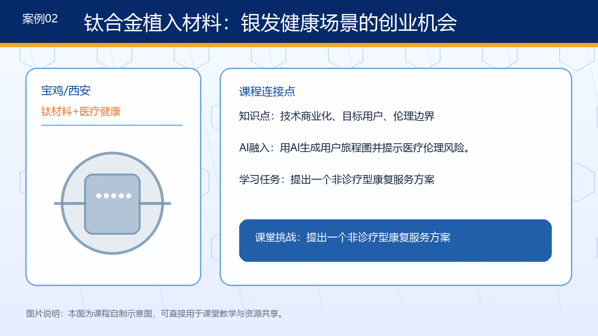
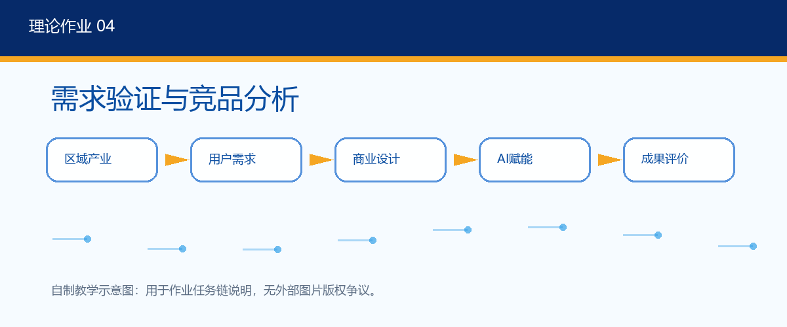
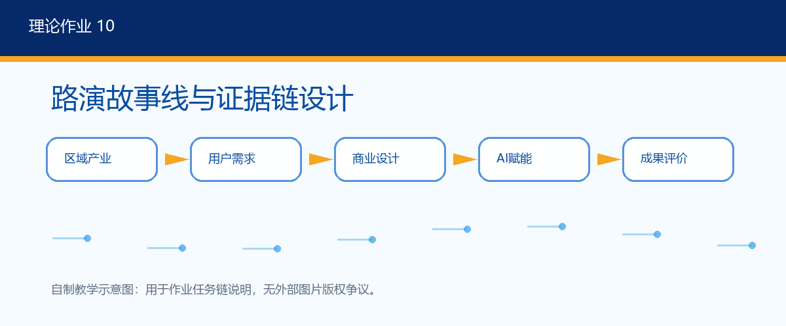

资源整体概述
课程资源围绕核心素养课程建设，形成五模块理论课件、八次实践任务、在线题库、任务单、案例库、H5互动资源和创赛资源包的完整体系。
- 理论线按照14周展开，突出创新思维、用户需求、商业模式、AI赋能与路演落地。
- 实践线按照8次项目任务推进，形成问题卡、用户画像、访谈提纲、商业画布、AI诊断记录、MVP说明和路演稿。
- 在线题库与H5互动资源用于课前预习、课堂互动、课后测试和项目复盘。
《创新创业基础》面向全校本科生，采用“理论递进+实践穿插+项目驱动+AI赋能+课赛融通”的教学策略，服务学生创新精神、项目能力与社会责任培养。
课程资源围绕核心素养课程建设，形成五模块理论课件、八次实践任务、在线题库、任务单、案例库、H5互动资源和创赛资源包的完整体系。
掌握设计思维、用户画像、需求洞察、商业模式画布、AI工具应用、MVP原型、知识产权合规和路演答辩。
围绕真实问题完成机会识别、访谈调研、竞品比较、项目计划、团队协作、AI辅助诊断和Demo表达。
培养问题意识、创新精神、诚信合规、科技向善、服务地方产业和面向社会真实需求的责任意识。
理论课每周2学时，共14周，按照“从机会到落地”的项目成长链条展开。
建立创新创业认知，理解新质生产力与地方产业机会。

从用户画像、访谈和需求验证中发现可讨论的创业机会。

完成价值主张、竞品定位、商业模式画布与项目计划。
用AI工具支持调研整理、项目诊断、方案迭代和原型构思。

围绕证据链、商业计划书、路演表达与竞赛转化收束项目。
实践课每次2学时，将小组项目从问题观察推进到终评展示。
从校园、社区、区域产业中发现真实问题并形成机会卡。
明确目标用户、访谈问题和伦理告知语。
完成竞品分析表、需求假设表和AI辅助摘要。
提出价值主张、收入来源、关键资源和假设验证计划。
完成团队分工、迭代记录和版本对比。
沉淀AI诊断表、Prompt记录、MVP说明和原型图。
整理路演提纲、答辩问题清单和同伴评价表。
提交终版项目包、展示PPT、复盘报告和个人反思。
将AI作为调研整理、项目诊断、方案迭代、原型构思和路演问答的学习支架。
围绕宝鸡钛谷、智能制造、低空经济、现代农业、文旅融合和社会创新设计案例。
把问题发现、需求洞察、团队协作、合规伦理、商业表达和社会价值纳入评价。